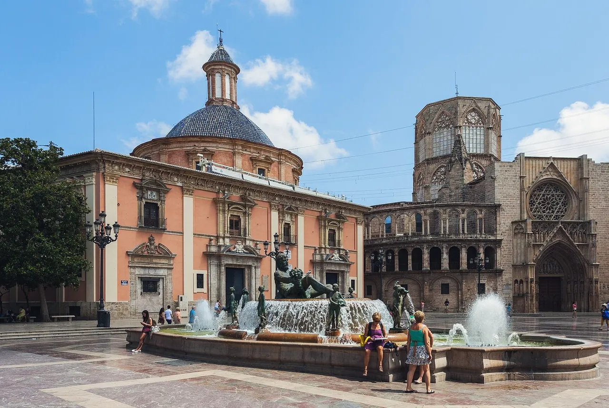

Relocation services in Valencia
Get to know Valencia before you move, find a home or school, and get practical help with the paperwork. Choose the support that fits your move.


-
Pre-Move Assistance
Get to know the city and surrounding areas before you move.
-
Home Finding
Independent help renting or buying, from the shortlist to moving day.
-
Legal & Administrative Formalities
Practical help with registrations, appointments and paperwork.
-
School Finding
Compare school options and get help with visits and enrolment.
-
Relocation Packages
Compare what’s included and find the right level of support.